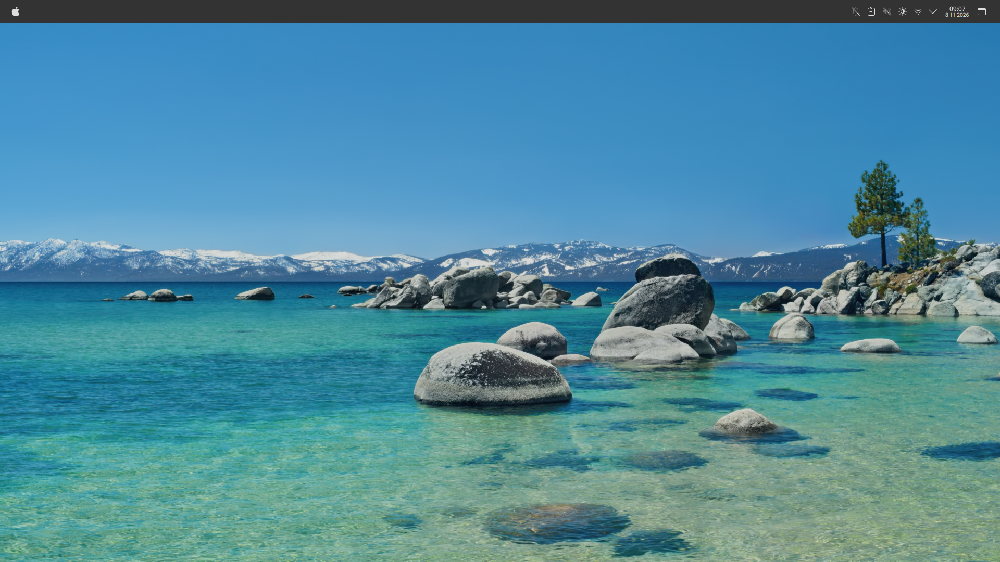
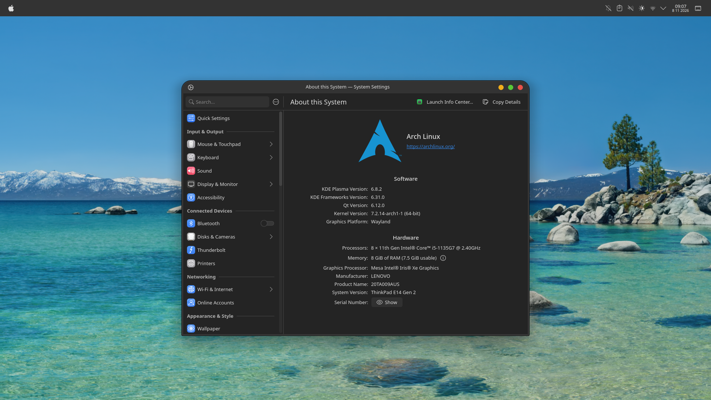
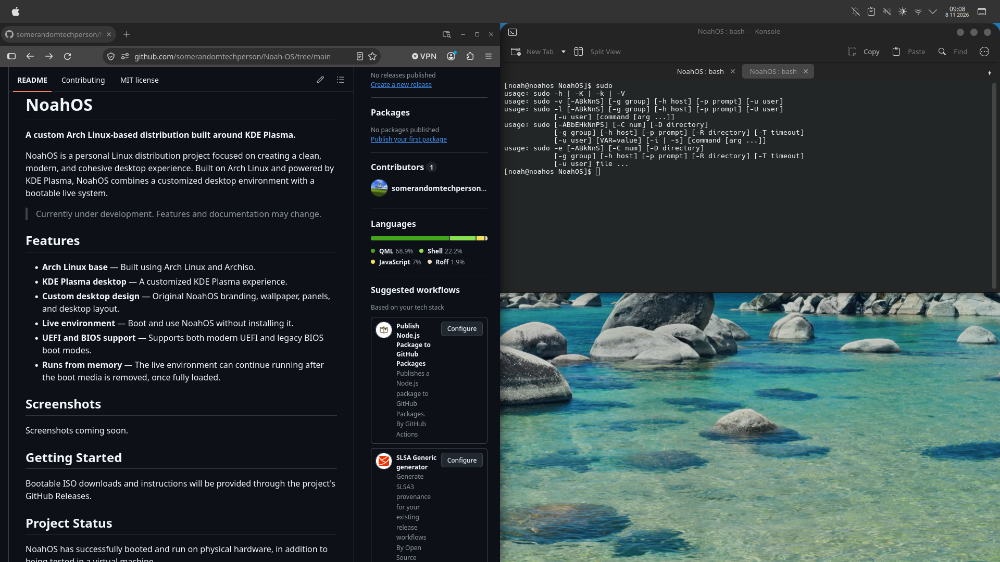

01 — The desktop
A space to focus.
A clean desktop designed to make your everyday computing feel natural.
A desktop that feels right at home.
Thoughtfully designed. Powered by Arch Linux. Built around a clean, cohesive desktop experience.

The NoahOS desktop experience
NoahOS brings together the flexibility of Arch Linux and the familiarity of KDE Plasma in a carefully customized desktop environment.
A clean desktop designed to make your everyday computing feel natural.
A desktop experience with the applications you need.

Built on the Arch Linux ecosystem, with a customized KDE Plasma desktop.

Discover NoahOS and follow its development.